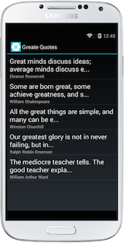

Duration
20 minutes
Goals
This exercise will take an existing iOS, Android, or UWP project and pull out sharable code into a Portable Class Library, using the Factory Pattern to isolate the platform-specific code to read and write the storage file used to display quotes.
Assets
This exercise includes a starter project in the Start folder. There is also a completed version of this solution if you would like to check your work.
Challenge
There are several applications in the starting solution: an iOS, an Android and a Universal Windows project. Each one does the same thing: displays famous quotes and allows you to add, edit and delete quotes.
All three projects are completely independent right now, however they have a few files and some connector code which could be shared with a little rework. Our challenge is to take these files and move them to a shared Portable Class Library, reworking the existing code so that we can share some of the code in a platform-independent fashion.
The sharable code is the model representing our quote and the data layer which loads and saves the quotes - these are contained in the Data folder in all three projects. The loader code persists to and from a file which is placed in different locations depending on the platform, so we will need to abstract this location as well as the code which identifies the location.
We will have to perform several steps to accomplish our goals:
- Create a new Portable Class Library to hold our shared code.
- Move the
GreatQuotemodel into the PCL. - Create an abstraction to represent the
QuoteLoaderwhich will allow the platform-specific code to provide an implementation that places the file in the proper location. - Supply the implementation through a factory property or method which creates the quote loader.
GreatQuote to get the project to compile properly.
You can either come up with your own solution to the above steps, or follow along with the provided instructions below.
Steps
You can work with any of the three projects initially, perform all the steps and get the project working, and then if you have time at the end, convert the other projects to use your new abstractions and factory.
Create the Portable Class Library
Our first step is to create the library to hold our shared code - we will use a Portable Class Library (vs. a Shared Project) as it will force us to put more thought into how we architect our shared code and provide a distinct boundary between the projects.
- Add a new Portable Class Library (PCL) project to the solution. Name it GreatQuotes.Data.
- Remove the blank source file added to the project by default.
-
Move the
GreatQuoteclass from the Data folder in your platform project into the PCL. Make sure it's no longer in the platform-specific project and is only in the PCL project. - Add a reference to the PCL to your platform project so it has access to the model data.
- Build the solution and make sure it still works - all we've done is move a file which was already portable so it should.
The PCL project is not compiling!
Create the abstraction for the Quote Loader
Next, we will need to provide an abstraction for the Quote Loader code we are using. If you try to add it to the PCL directly, it will fail to compile because it has dependencies against specific file APIs which are not available in our current profile. In addition, each platform is slightly different in how it handles local files and where they are placed. As a result, we need a unique approach to load our quotes for each platform.
-
Open the existing QuoteLoader.cs file in your platform-specific project (iOS, Android or Windows) - this file is located in the Data folder of each project. Examine the methods and implementation presented here.
- Load is used to load quotes from a file.
- Save is used to save an existing collection of quotes back to the same file.
-
Create a new interface to represent our
QuoteLoaderindependent of the platform. We'll use an interface here, but you could also use an abstract base class as well. The interface should be placed into the Portable Class Library as it will be shared across all our projects.- Name it
IQuoteLoader. - Add definitions for the
LoadandSavemethods just as they are in the in your platform project.
- Name it
-
Have your platform-specific implementation of
QuoteLoaderimplement this interface - you shouldn't need to make any code changes to it as the signatures forLoadandSaveshould already be present in the existing class. - Build and run the application and make sure it still works properly.
Create the Factory to create the IQuoteLoader
Next, let's utilize the Factory pattern to create the property implementation of the IQuoteLoader that we will use in our PCL code.
- Create a new static class named
QuoteLoaderFactoryin the Portable Class Library. This will represent the factory class we will use to create our platform-specific implementation of anIQuoteLoader. - Add a single static property named Create that is of type
Func<IQuoteLoader>. This property is what we will set in order to create a newIQuoteLoader. - Here is what your code should look like for the factory:
public static class QuoteLoaderFactory
{
// This must be assigned to a method which creates a new quote loader.
public static Func<IQuoteLoader> Create { get; set; }
}
Refactor the code
In all three platform-specific projects, there is almost identical code to load and save the quotes. This currently utilizes the QuoteLoader class directly, however we'd like to push this common code into our shared code (the PCL). In particular, we want to move the management of the GreatQuote collection into shared code so that every platform locates the data the same way. Let's start by creating a class to manage our quotes.
- Create a new
QuoteManagerclass in the PCL. -
Use the Singleton Pattern to create a static
Instanceproperty to expose a single copy of theQuoteManager. You can use the built-inLazy<T>type to implement this pattern, or just create the object the first time the property is accessed; the goal is to have a public, static property to get to a single, known instance of the object. If you need some help, you can use the below, simple example of creating a singleton in C#. You can also look at the Completed.V1 lab which uses the more efficientLazy<T>approach. - Add a public
IList<GreatQuote>property namedQuotesto expose the loaded quotes. - In the constructor, assign the property to a new
ObservableCollection<GreatQuote>instance. -
Next, obtain an
IQuoteLoaderobject using theQuoteLoaderFactory.Createdelegate and assign it to a field of your class. To do this, just call the delegate assigned to the property:IQuoteLoader loader; ... private QuoteManager() { ... loader = QuoteLoaderFactory.Create(); } - Then, populate your list of quotes using the
Loadmethod from theIQuoteLoaderfield, this returns anIEnumerable<GreatQuote>. - Finally, add a new public, instance method named
Savewhich saves the collection of quotes using the quote Loader field'sSavemethod.
public class QuoteManager
{
private static readonly QuoteManager instance = new QuoteManager();
public static QuoteManager Instance { get { return instance; } }
private QuoteManager()
{
...
}
}
Use the Quote Manager and Assign the Factory
The final step is to use the new shared QuoteManager class and assign the factory.
-
Open the application level class which was loading the quotes - this is
AppDelegatein AppDelegate.cs for iOS,Appin App.cs for Android, andAppin App.xaml.cs for Windows. -
Next, assign the
QuoteLoaderFactory.Createproperty of your factory class to a method which creates a new platform-specificQuoteLoaderclass (e.g. something that implementsIQuoteLoader).- You can use any delegate assignment style you prefer - lambda, anonymous method, or a regular C# method defined in your class.
- Add this code into the
FinishedLaunchingoverride in the iOS project. - Add this code into the
OnCreateoverride in the Android project. - Add this code into the
Appconstructor in the Windows project.
-
Next, remove the
Quotescollection and the quote loader code from the platform-specific code. Locate the staticList<GreatQuote>that is used when loading and saving quotes. Here's what the line looks like: -
This is the code we'd like to remove, remember that each project has it in a different file:
- iOS - AppDelegate.cs
- Android - App.cs
- Windows - App.xaml.cs
-
Try to compile your app - this will produce several errors because of our refactoring.
- Go through each error where the
Quotescollection was being referenced and fix each spot to now use the commonQuoteManager.Instance.Quotesproperty. This will actually reduce the coupling in the current code by using a more formalized pattern to locate the quotes. -
Change the call to the original
QuoteLoader.Savemethod to use the newQuoteManager.Instance.Savemethod. This is in the same application-level class as the loading code. You should get a compile error which will point you at the correct spot to fix.
- Go through each error where the
-
Build and run the app to verify it loads and saves quotes properly. Try putting a breakpoint into the
QuoteManagerclass where it obtains the quote loader - trace through it to see it jump from the cross-platform (shared) code into each platform specific project.
public static List<GreatQuote> Quotes { get; private set; }
Update the other platform project
If you have time, update the other platform-specific project to use your new Portable Class Library and QuoteManager.
Summary
In this exercise, you have taken an existing set of applications and moved the data management code into a Portable Class Library, utilizing the Factory Pattern to load and save the data to a file.